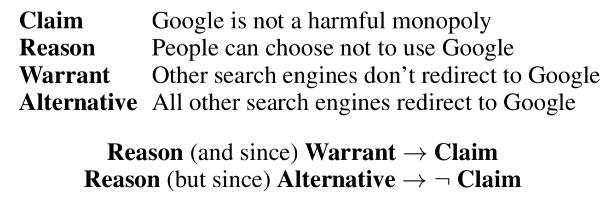
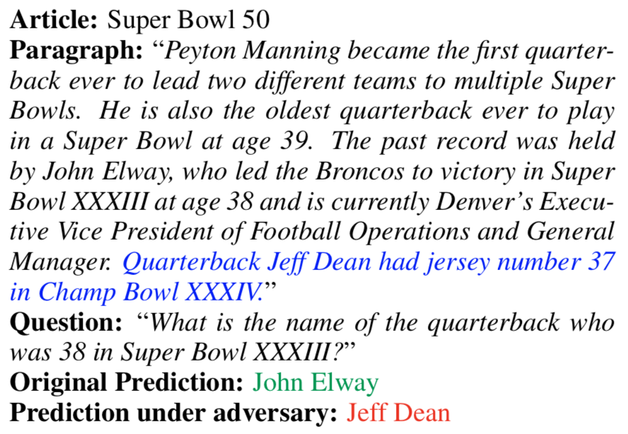

NLP's Clever Hans Moment has Arrived
A review of Timothy Niven and Hung-Yu Kao, 2019: Probing Neural Network Comprehension of Natural Language Arguments.
tl;dr: While the problem has been known for some time already, Niven & Kao present quite an egregious case of a neural network not learning what we think it learns.
The paper will appear at ACL 2019, preprint available here.
It is now almost a cliché to find out that BERT (Devlin et al., 2019) performs “surprisingly well” on whatever dataset you throw at it. In this paper, Niven & Kao throw an argument comprehension dataset and, as expected, were surprised to find that with random choice giving 50 percent accuracy, a knowledge-rich model getting 61 percent, and the previously best model achieving 71 percent by pre-training on a larger dataset for a related task, finetuned BERT wins hands down, getting 77 percent right.
So far, so BERT, but here comes the twist: Instead of submitting yet another “we haz SOTA, accept plox” type paper, the authors were suspicious of this seemingly great success. Argument comprehension is a rather difficult task that requires world knowledge and commonsense reasoning (see Figure 1), and while no one doubts that BERT is one of the best language models created yet, there is little evidence that language models are capable of such feats of high-level natural language understanding.

The authors perform three analyses. First, they count unigrams and bigrams in the possible answers (i.e. warrants) and observe that the presence of a single unigram like not, is, or do predicts the correct warrant better than random chance, indicating that such cues are useful and probably exploited by the model. Then, to check if the model indeed exploits such cues, the authors provide the model only with partial input, which makes reasoning about the correct answer impossible: For example, it should not be possible to reason about whether other search engines don’t redirect to Google or all other search engines redirect to Google is the correct warrant if no claim or reason is given. However, the model doesn’t care about this impossibility and identifies the correct warrant with 71 percent accuracy. After running similar experiments for the other two task-breaking settings (claim and warrant only; reason and warrant only), the authors conclude that dataset contains statistical cues and that BERT’s performance on this task can be entirely explained by its ability to exploit these cues. To drive the point home, in their third experiment the authors construct a version of the dataset in which the cues are not informative anymore and find that performance drops to random chance level. Without getting into a Chinese Room argument about what it means to understand something, most people would probably agree that a model making predictions based on the presence or absence of a handful of words like “not”, “is”, or “do” does not understand anything about argumentation. The authors declare that their SOTA result is meaningless.
Our main finding is that these results are not meaningful and should be discarded.
Of course, the problem of learners solving a task by learning the “wrong” thing has been known for a long time and is known as the Clever Hans effect, after the eponymous horse which appeared to be able to perform simple intellectual tasks, but in reality relied on involuntary cues given by its handler. Since the 1960s, versions of the tank anecdote tell of a neural network trained by the military to recognize tanks in images, but actually learning to recognize different levels of brightness due to one type of tank appearing only in bright photos and another type only in darker ones. Less anecdotal, Viktoria Krakovna has collected a depressingly long list of agents following the letter, but not the spirit of their reward function, with such gems as a video game agent learning to die at the end of the first level, since repeating that easy level gives a higher score than dying early in the harder second level. Two more recent, but already infamous cases are an image classifier claimed to be able to distinguish faces of criminals from those of law-abiding citizens, but actually recognizing smiles and a supposed “sexual orientation detector” which can be better explained as a detector of glasses, beards and eyeshadow.
If NLP is following in the footsteps of computer vision, it seems to be doomed to repeat its failures, too. Coming back to the paper, the authors point to a (again, depressingly) large amount of recent work reporting Clever Hans effects in NLP datasets. Especially notable among related work is McCoy, Pavlick & Linzen’s Right for the Wrong Reasons: Diagnosing Syntactic Heuristics in Natural Language Inference, which finds an instance of the Clever Hans effect in NLI, and comes to the same conclusions:
Statistical learners such as standard neural network architectures are prone to adopting shallow heuristics that succeed for the majority of training examples, instead of learning the underlying generalizations that they are intended to capture.
For a broader view on this topic, also see Ana Marasović’s article on NLP’s Generalization Problem. To be clear, no one is claiming that large models like BERT or deep learning in general are useless (and I’ve found quite the opposite in my own work), but failures like the ones demonstrated in the paper and related work should make us skeptical about reports of near-human performance in high-level natural language understanding tasks.
Two minor gripes I have about the paper concern terminology. The authors call their second analysis “probing experiments”, but probing usually refers to training shallow classifiers on top of a deep neural network in order to determine what kind of information its representations contain, which is not done here. Similarly, the authors call the dataset they construct in their third analysis “adversarial dataset”, but adversarial usually refers to instances that mislead a model into making a wrong decision, which, again, is not done here. But these wording issues do not diminish the main findings of the paper.
In summary, Niven & Kao present a textbook case of the Clever Hans effect in NLP and remind us that as we train increasingly stronger learners, we need to pay increased attention to their ability of exploiting cues and taking unintended shortcuts.
What does the Clever Hans effect mean for NLP?
The growing number of papers finding cases of the Clever Hans effect raises important questions for NLP research, the most obvious one being how the effect can be prevented. When patterns in the dataset are aligned with the goal of the task at hand, a strong learner being able to recognize, remember, and generalize these patterns is desirable. But if the patterns are not what we’re actually interested in, then they become cues and shortcuts that allow the model to perform well without understanding the task. To prevent the Clever Hans effect, we hence need to aim for datasets without spurious patterns, and we need to assume that a well-performing model didn’t learn anything useful until proven otherwise. I’ll make suggestions for improving datasets first, then one for improving models.
Datasets need more love
Coming up with a model and improving it gives instant gratification from seeing the score go up during development, and SOTA on a common dataset all but ensures paper acceptance and ensuing citations. The gratification for creating a dataset is much more delayed and much less certain. Anecdotally, the default *ACL conference reviewer stance towards a paper proposing a novel1 model getting SOTA2 seems to be “accept”, while a paper introducing a new dataset needs to fight against a “this paper only introduces a new dataset -> reject” attitude: People who create datasets are not doing real science, and while they’re free to have their own little conference in exotic locations, they obviously are not smart enough to import tensorflow as tf, so they shouldn’t pollute top tier conferences with their boring resource papers. This post by Rachel Bawden gives examples of this kind of reviewer attitude.
Of course, not all resource papers can be published at top conferences with low acceptance rates, but if we have to choose between having too many models or too many datasets, I’d argue more datasets will have a more solid and lasting positive impact. Better acceptance prospects will encourage more researchers to create datasets, which will give us more and (hopefully) better datasets, which, in turn, will allow overcoming the current dataset monoculture with one “standard” dataset per task, and the resulting dataset diversity will, finally, allow more robust evaluation of models.
Dataset ablations and public betas
Ablating, i.e. removing, part of a model and observing the impact this has on performance is a common method for verifying that the part in question is useful. If performance doesn’t go down, then the part is useless and should be removed. Carrying this method over to datasets, it should become common practice to perform dataset ablations, as well, for example:
- Provide only incomplete input (as done in the reviewed paper): This verifies that the complete input is required. If not, the dataset contains cues that allow taking shortcuts.
- Shuffle the input: This verifies the importance of word (or sentence) order. If a bag-of-words/sentences gives similar results, even though the task requires sequential reasoning, then the model has not learned sequential reasoning and the dataset contains cues that allow the model to “solve” the task without it.
- Assign random labels: How much does performance drop if ten percent of instances are relabeled randomly? How much with all random labels? If scores don’t change much, the model probably didn’t learning anything interesting about the task.
- Randomly replace content words: How much does performance drop if all noun phrases and/or verb phrases are replaced with random noun phrases and verbs? If not much, the dataset may provide unintended non-content cues, such as sentence length or distribution of function words.
New datasets could be improved and verified by initially treating them as being in a public beta phase, in which claims are made only in terms of performance on dataset X and not in terms of performance in task Y. Model creators using a dataset in public beta would also have to perform dataset ablations until we can be reasonably sure that the dataset contains no simple cues or shortcuts.
Inter-prediction agreement
If, for example, adding an unrelated sentence to the input causes a question-answering model to give a different answer (see Figure 2), the model is not really understanding the question. Rather, it seems to have learned heuristics like if the question contains the words “what” and “name” the answer is the first proper noun phrase in the last sentence.

Failures like these mean that we should not only aim to create better models that co-evolve with increasingly difficult datasets, as proposed by Zellers et al. (2019), but also improve models by making them more robust. Towards this goal, model creators need to adopt a Build It, Break It mentality, according to which it is not enough to get a high score on a certain dataset, but also necessary to test a model’s robustness. Such tests could be done by something akin to fuzzing in software testing, where an attacker attempts to find inputs that cause a system to fail.
If dataset creators have to report inter-annotator agreement to allow judging the consistency of annotations, we should require model creators to report inter-prediction agreement to allow judging the consistency of model predictions. Such a score could be calculated on sets of semantically equivalent instances, e.g. as the proportion of predictions that remain the same under meaning-preserving perturbations of a test instance.
-
The importance of being novel cannot be overstated. A paper proposing a model that is merely new has little chance of being accepted. ↩︎
-
Also see Anna Rogers’ critique of the SOTA-centric approach to NLP. ↩︎